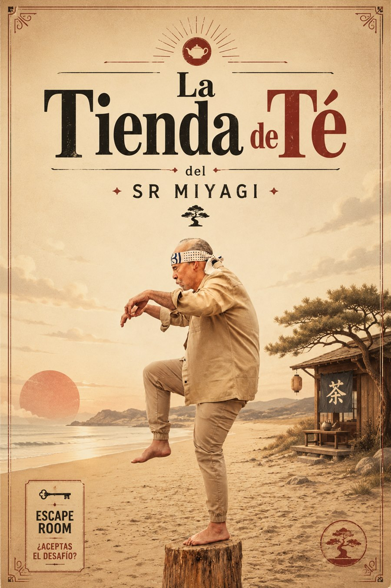

Sala destacada #89
La Tienda de Té del Sr. Miyagi
Don Escape
Nota global: 9.5/10
La Tienda de Té del Sr. Miyagi de Don Escape en Valencia. Nota global 9.5/10 con 2 fuentes y 3 premios o nominaciones. Consulta datos, sinopsis,...